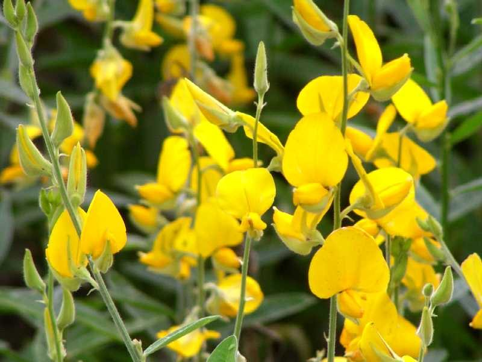

सनईSunn Hemp
Crotalaria juncea · Fabaceae · FLR-0398

- Scientific name वैज्ञानिक नाम
- Crotalaria juncea L.
- Family कुल
- Fabaceae
- Hindi हिंदी
- सनई
- Local names स्थानीय नाम
- sanai, san, san hemp, sunn hemp
- Status here यहाँ की स्थिति
- cultivated
- Movement आवागमन
- Resident, here all year
- Known from कहाँ दर्ज
- Others have published records elsewhere in Uttar Pradesh, none yet from this region उत्तर प्रदेश में अन्यत्र दूसरों के अभिलेख, इस क्षेत्र से अभी नहीं
- IUCN IUCN
- not evaluated
- Review समीक्षा
- not yet reviewed
When to look कब देखें
Present all year. साल भर मौजूद।
Uses and possibilities उपयोग और संभावनाएँ
“Traditional medicine” means a documented traditional use, not a claim that it works. Nothing on this page is medical advice.
Drawn from the documented uses in the profile below, where each is labelled traditional, current or a research lead. All uses →
Tell it apart from इनसे अलग पहचानें
सनई / Sunn Hemp
Crotalaria juncea L. — Fabaceae
सनई — अवध और पूर्वांचल के मैदानों में वर्षाकाल में उगाई जाने वाली एक बहुउपयोगी फलीदार फसल है। इसके सुनहरे पीले तितलीनुमा फूल, पतले छड़ी जैसे तने और मजबूत रेशे (सन) पारंपरिक रस्सियां और तांत बनाने के लिए तथा मिट्टी को हरी खाद देकर उपजाऊ बनाने के लिए जाने जाते हैं।
Quick Identification त्वरित पहचान
| Feature | Description |
|---|---|
| Habit | Tall, erect, slender, rod-like annual shrub or subshrub with sulcate stems |
| Vestiture | Stems and leaves thinly clothed with shining, appressed, silky brownish-white hairs |
| Foliage | Simple, alternate, linear-oblong or lanceolate leaves with minute, subulate stipules |
| Inflorescence | Open, terminal and lateral racemes bearing numerous bright yellow pea-like blossoms |
| Flowers | Papilionaceous corolla; bright golden-yellow with an exserted, beaked keel |
| Fruit | Inflated, cylindrical-oblong pod clothed with short, persistent spreading hairs |
Field tip: Look for dense, tall stands of slender, reed-like green stems with simple narrow leaves growing rapidly in monsoon fields. In late monsoon, the crop erupts into a sea of showy, bright golden-yellow pea-shaped blossoms that hum with visiting carpenter bees. Shaking dry mature pods produces a distinct rattling sound as loose seeds strike the inflated pod walls.
हिंदी:
इसके पौधे पतले, लंबे और सीधे छड़ी जैसे खड़े रहते हैं।
पत्तियों और तनों पर रेशमी चमक वाले बारीक रोएं होते हैं।
बरसात के अंत में चटक सुनहरे पीले रंग के तितली जैसे फूल खिलते हैं।
सूखी फलियों को हिलाने पर अंदर के बीज खड़खड़ की आवाज करते हैं।
Morphology आकारिकी
Measurement not available in consulted sources. Sunn hemp is a tall, erect, stiff, suffrutescent annual legume cultivated for its valuable bast fiber and soil-enriching green biomass. The root system features a vigorous, deep-penetrating taproot equipped with abundant, branched lateral roots that bear large, lobed, pink-centered nitrogen-fixing nodules. The stem is virgate, rod-like, terete, longitudinally sulcate or grooved, green, and thinly clothed with appressed, shining, reddish-brown or silvery silky hairs; it branches sparsely when grown at high densities.
The leaves are simple, alternate, and rather distant along the stem. The petioles are very short, grooved, and silky. The leaf blades are linear, oblong, or narrowly lanceolate, obtuse and mucronate or acute at the apex, cuneate at the base, and entire along the margins. Both upper and lower surfaces are shining, clothed with soft, appressed, reddish-brown or silvery silky hairs. The stipules are minute, subulate, or occasionally absent.
The inflorescence is an erect, open, terminal or lateral raceme that is not panicled, bearing loosely arranged blossoms along a central axis. The floral bracts are minute and linear; the pedicels are short, curved, and bibracteolate near the base of the calyx.
The flowers are large, showy, bisexual, and papilionaceous. The calyx is deeply five-toothed, campanulate, densely covered with reddish-velvety or silky hairs, with the teeth lanceolate and much longer than the tube. The corolla is bright golden-yellow, far exceeding the calyx. The standard petal (vexillum) is broadly ovate or orbicular, erect, often faintly lined with reddish or purple streaks near the claw; the wing petals (alae) are oblong and shorter than the standard; the keel petals (carina) are fused, strongly incurved into a prominent, pointed beak, and glabrous. The stamens are ten and monadelphous, with filaments united into a tube that is split along the upper side, bearing dimorphic anthers (alternating long versatile and short basifixed anthers). The ovary is superior, sessile, unilocular, containing multiple ovules, with an incurved style bearded along the inner margin. The fruit is an inflated, cylindrical or oblong, turgid pod (legume), clothed with short, spreading, persistent silky hairs, containing multiple loose, kidney-shaped, compressed, shiny dark brown or black seeds that rattle inside the dry pod when shaken.
हिंदी: इसके पौधे सीधे, छड़ी जैसे पतले और लंबे होते हैं। पत्ते सादे और रेशमी रोएंदार होते हैं। चटक सुनहरे पीले फूल खिलते हैं और फलियां फूलकर ढोलक जैसी बनती हैं।
Behaviour & Ecology व्यवहार एवं पारिस्थितिकी
Crotalaria juncea is a fast-growing, sun-loving tropical and subtropical legume adapted to hot monsoon climates with moderate to high rainfall. It exhibits rapid vertical elongation, forming a dense, continuous vegetative canopy that rapidly outcompetes and suppresses annual weed seedlings.
The flowers display specialized papilionaceous pollination ecology tailored for large, strong-bodied insects. The keel petals firmly clasp the anthers and style; when a heavy insect lands on the wing petals, its weight depresses the keel, causing the style and pollen to pump outward against the insect's abdomen (a piston mechanism). Large carpenter bees (Xylocopa), leafcutter bees (Megachilidae), and honeybees are the primary legitimate pollinators capable of tripping the floral mechanism.
In the subterranean zone, Crotalaria juncea establishes a highly efficient symbiosis with nitrogen-fixing soil bacteria of the genus Bradyrhizobium. Active nodules fix substantial atmospheric nitrogen into plant-available ammonium, substantially enriching the soil nitrogen pool. Furthermore, the root system synthesizes and exudes allelopathic pyrrolizidine alkaloids that possess marked nematicidal properties, actively suppressing populations of damaging nematodes in the soil.
हिंदी: इसकी जड़ों में गांठें होती हैं जो हवा से नाइट्रोजन लेकर मिट्टी को उपजाऊ बनाती हैं। इसकी जड़ें मिट्टी के हानिकारक कीड़ों को भी रोकती हैं।
Cultivation Calendar खेती का कैलेंडर
Duthie & Fuller (1882, Part I, p. 80) record under Crotalaria juncea (vern. sanai, arjha san) that it is grown as a sole crop during the kharif season for its bast fibre, which is extracted and used for well ropes, string, and fishing nets.
हिंदी: डथी एवं फुलर (1882, भाग 1, पृ. 80) के अनुसार, सनई (अरझा सन) खरीफ के मौसम में एकल फसल के रूप में रेशे के लिए उगाई जाती है, जिससे कुएं की रस्सियां, तांत और मछली पकड़ने के जाल बनाए जाते हैं।
Life Cycle / Phenology जीवन चक्र एवं ऋतुचक्र
Seeds germinate rapidly within a few days in warm, moist soil. The seedling establishes a strong taproot, and vertical stem elongation proceeds at an extraordinary pace, often reaching full vegetative height within a couple of months. Nodule formation begins on the root system soon after emergence.
Floral buds initiate in August as photoperiods shorten. Flowering extends through September and early October, filling the field with bright golden blooms. Following cross-pollination by bees, pods swell into cylindrical capsules over a few weeks.
By late October and November, the pods ripen from green to a dry, papery, dark straw-brown texture, with seeds detaching inside. The above-ground foliage senesces and drops, leaving the dry stems bearing clusters of rattling pods ready for seed harvest.
हिंदी: बीज कुछ ही दिनों में उगते हैं और पौधा बहुत तेजी से बढ़ता है। अगस्त-सितंबर में फूल खिलते हैं और अक्टूबर में फलियां सूखकर खड़खड़ाने लगती हैं।
Associated Species / Interactions सहजीवी प्रजातियाँ एवं पारिस्थितिक संबंध
Sunn hemp fields represent crucial ecological stepping stones for biodiversity in the monsoon agricultural landscape. The showy, nectar-rich flowers are frequented by diverse wild bees, syrphid flies, and butterflies. The crop is a food plant for caterpillars of arctiine moths, whose colorful larvae feed on leaves and developing seed pods.
हिंदी: इसके पीले फूलों पर भंवरे और मधुमक्खियां आती हैं। सनई की सुंडी इसके पत्तों और फलियों पर पलती है।
Pests and Diseases कीट और रोग
A major insect pest of sunn hemp is hairy caterpillars. The gregarious larvae defoliate the crop and bore into green pods to consume developing seeds. Shoot-boring caterpillars tunnel into apical shoot tips, causing terminal galling and stunted fiber stalks. Pod borers also feed on floral buds and young pods.
Fungal diseases include vascular wilt, which causes progressive drooping, leaf yellowing, and vascular browning of the root and lower stem. Anthracnose produces circular dark sunken lesions on stems and leaves. Rust produces reddish-brown pustules on lower leaf surfaces in late autumn. Management involves using healthy seed, timely sowing, crop rotation with non-legumes, and rogueing of infected plants.
हिंदी: सनई की रोएंदार सुंडी और तना छेदक इसके मुख्य कीट हैं। उकठा रोग से बचाव के लिए फसल चक्र और खेत की सफाई जरूरी है।
Agricultural / Human Relevance कृषि एवं मानव प्रासंगिकता
Sunn hemp is a fibre crop. Its bast fibre is used to manufacture durable ropes, cordage, and fishing nets. Duthie & Fuller (1882, Part I, p. 80) state that the fibre of sanai is used chiefly for well ropes, string and fishing nets. Chopra et al. (1956, p. 82) record that the seeds are used to purify the blood and in impetigo and psoriasis. This is a record of published traditional use, not medical advice.
हिंदी: डथी एवं फुलर (1882) के अनुसार सनई का रेशा कुएं की रस्सियों, तांत और मछली के जाल बनाने के काम आता है। चोपड़ा आदि (1956) के अनुसार इसके बीज औषधीय हैं किंतु मवेशियों के लिए विषैले हैं।
Expected Locally स्थानीय रूप से अपेक्षित
Not a field record. Written from published accounts for eastern Uttar Pradesh. No confirmed local sighting yet — if you have seen it, that is what the atlas needs.
अभी तक स्थानीय पुष्टि नहीं। यह विवरण प्रकाशित स्रोतों से है, किसी अवलोकन से नहीं।
Look in alluvial agricultural fields, seasonal green manure plots, and riverine terraces across eastern Uttar Pradesh. It should be looked for during the monsoon months from July to October in farm plots.
GBIF holds no published record from the Awadh–Purvanchal plain yet; crops are seldom recorded there.
A first record would be a photograph of the flowering plant or harvest with place and date, sent through the About page.
Distribution वितरण
Crotalaria juncea is indigenous to the Indian subcontinent and Southeast Asia. It has been cultivated across India since antiquity, with classical references found in ancient Sanskrit literature describing its fiber and medicinal applications. It has been introduced as a green manure and cover crop throughout the tropics, including East and South Africa, South America, and the southeastern United States.
हिंदी: यह भारत और दक्षिण एशिया का मूल पौधा है, जो प्राचीन काल से उत्तर प्रदेश के मैदानों में बड़े पैमाने पर उगाया जाता है।
Research Questions शोध प्रश्न
- What is the total biological nitrogen fixation and biomass accumulation rate of local sunn hemp landraces in eastern Uttar Pradesh silt loams? / पूर्वी उत्तर प्रदेश की दोमट मिट्टी में सनई की स्थानीय किस्में कितनी जैविक नाइट्रोजन और हरी खाद पैदा करती हैं?
- How effective is sunn hemp green manuring in reducing nematode populations in subsequent autumn crops? / सनई की हरी खाद दबाने से अगली फसल में सूत्रकृमि (नेमाटोड) में कितनी कमी आती है?
- What are the primary Bradyrhizobium strains native to Awadh soils that nodulate sunn hemp most effectively under high monsoon temperatures? / अवध की मिट्टी में सनई की जड़ों में गांठें बनाने वाले कौन से देशी जीवाणु सबसे सक्रिय हैं?
- How do different retting methods affect the tensile strength and cellulose purity of rural sunn hemp fiber?
- What are the seasonal population dynamics of pod-boring caterpillars on seed crops?
हिंदी: हरी खाद से मिट्टी की सेहत सुधारने और रेशा गलाने की उन्नत तकनीकों पर और अध्ययन जरूरी है।
Similar Species मिलती-जुलती प्रजातियाँ
Sunn hemp (Crotalaria juncea) can be confused with other tall, yellow-flowered monsoon legumes and wild rattlepods. Dhaincha (dhaincha, Sesbania bispinosa, FLR-0111) is also grown as a green manure and fiber plant, but it has paripinnate compound leaves with numerous small leaflets, prickly stems, and long, slender, cylindrical pods, completely unlike the simple leaves and inflated turgid pods of sunn hemp. Wedge-leaved rattlepod (Crotalaria retusa) is a wild shrubby species with obovate, wedge-shaped leaves with a retuse apex, whereas sunn hemp has linear-lanceolate leaves and taller, rod-like unbranched stems. Patsan or kenaf (Hibiscus cannabinus) and companion mustard produces bast fiber, but is a malvaceous plant with large cream flowers with a dark purple center and deeply lobed leaves.
| Feature / Trait | Sunn Hemp (Crotalaria juncea) | Dhaincha ([[dhaincha | dhaincha]], Sesbania bispinosa, FLR-0111) | Wedge Rattlepod (Crotalaria retusa) |
|---|---|---|---|---|
| Foliage Type | Simple, linear-oblong, silky leaves | Paripinnate compound, many leaflets | Simple, obovate-cuneate, retuse leaves | |
| Stem Character | Slender, virgate, grooved, rod-like | Glabrous, armed with small prickles | Sturdy, branched subshrub | |
| Flower Morphology | Golden-yellow papilionaceous blossom | Yellow blossom dotted with purple spots | Bright yellow blossom with purple lines | |
| Fruit Morphology | Inflated, oblong, turgid, hairy pod | Very long, slender, cylindrical pod | Inflated, cylindrical, glabrous pod | |
| Primary Utility | High-grade bast fiber and green manure | Green manure, fuel sticks, gum | Wild ruderal weed; not cultivated |
Field rule: Sunn hemp (Crotalaria juncea) is distinguished by its simple silky leaves, virgate rod-like stems, and inflated turgid pods, whereas dhaincha has pinnate compound leaves and slender cylindrical pods.
हिंदी: ढैंचा के पत्ते कटीले और इमली जैसे संयुक्त होते हैं, जबकि सनई के पत्ते सादे, लंबे और रेशमी होते हैं।
Taxonomy & Classification वर्गीकरण एवं नामकरण
Crotalaria juncea was named and described by Carl Linnaeus in 1753 in Species Plantarum. The genus Crotalaria belongs to the tribe Crotalarieae within the legume family (Fabaceae, subfamily Faboideae). The generic name is derived from the Greek krotalon, meaning castanet or rattle, in allusion to the rattling noise made by loose seeds inside the dry, inflated pod. In J. F. Duthie's Flora of the Upper Gangetic Plain, the species is catalogued as a widely grown rainy-season crop valued for its superior bast fiber and soil-enriching qualities.
Original description. Crotalaria juncea was named and described by Carl Linnaeus in 1753 in Species Plantarum (vol. 2, p. 714).
Subspecies. No formally recognized subspecies exist; local landraces differ in fiber tensile strength, branching habit, and maturity days.
Family and order placement. The genus Crotalaria belongs to the tribe Crotalarieae of the legume family (Fabaceae, subfamily Faboideae), order Fabales.
IUCN status rationale. Crotalaria juncea is an ancient cultivated legume indigenous to the Indian subcontinent and is Not Evaluated (NE) on the IUCN Red List.
हिंदी: कार्ल लिनिअस ने 1753 में इसका वर्णन किया था। यह फैबेसी (मटर-दलहन कुल) का सदस्य है।
Photo Gallery फोटो गैलरी
No photos yet. Images documenting this species from eastern Uttar Pradesh will be added following verification.
References संदर्भ
- Linnaeus, C. (1753). Species Plantarum, vol. 2, p. 714. Laurentii Salvii, Holmiae.
- Duthie, J. F. & Fuller, J. B. (1882). Field and Garden Crops of the North-Western Provinces and Oudh. Part 1. Roorkee: Thomason Civil Engineering College Press, p. 80.
- Baker, J. G. (1876). Leguminosae. In J. D. Hooker (ed.), The Flora of British India, vol. 2, p. 79. L. Reeve & Co., London.
- Duthie, J. F. (1903). Flora of the Upper Gangetic Plain and of the Adjacent Siwalik and Sub-Himalayan Tracts, vol. 1, p. 206. Office of the Superintendent of Government Printing, Calcutta.
- GBIF Occurrence Data — Crotalaria juncea, India (2025).
- Chopra, R. N., Nayar, S. L. & Chopra, I. C. (1956). Glossary of Indian Medicinal Plants. New Delhi: Council of Scientific & Industrial Research, p. 82.
Source file: species/flora/crops/sunn_hemp.md